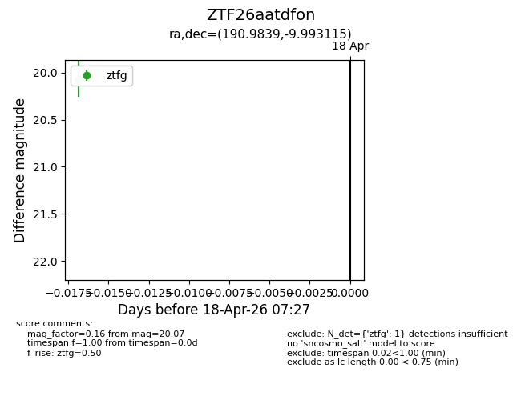
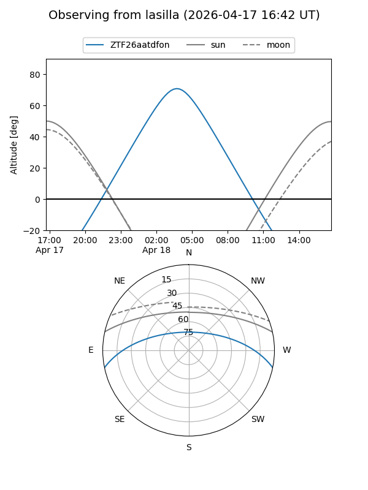
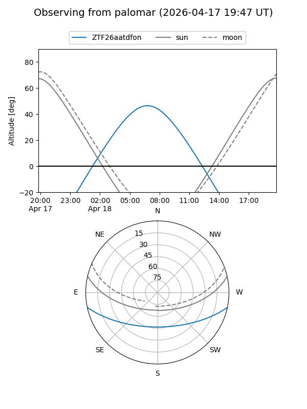

ZTF26aatdfon
Target ZTF26aatdfon at 2026-04-18 07:31
Aliases and brokers:
FINK: link
Lasair: link
ALeRCE: link
alt names
ZTF26aatdfon (ztf,fink_ztf)
Coordinates:
equatorial (ra, dec) = 190.9839,-9.99311
equatorial (HMS+DMS) = 12:43:56.13,-09:59:35.21
galactic (l, b) = (299.8735,+52.83407)
Flags:
Photometry:
last ztfg=20.07
1 ztfg detections
Lightcurve

Visibility


Additional plots